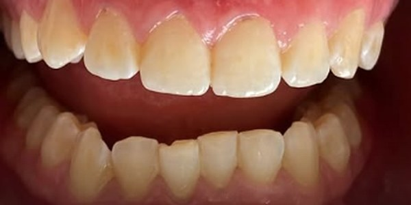
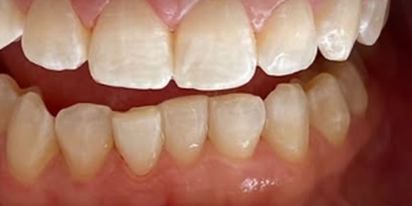

Clareamento dental, com acompanhamento.
Um bom clareamento começa por saber se ele é indicado para você. A avaliação vem antes do gel.
O que é
Um tratamento que clareia a cor dos dentes naturais com um gel próprio. Pode ser feito no consultório, em casa com moldeiras sob orientação da dentista, ou combinando os dois.
Para quem
Para quem tem dentes e gengiva saudáveis e quer um sorriso mais claro. Cáries, gengiva inflamada e sensibilidade são tratadas antes.
Como é o tratamento
Na avaliação, a dentista examina a boca, registra a cor inicial e indica a técnica. Durante o tratamento, ela acompanha a evolução e a sensibilidade.
O que esperar
O resultado varia de pessoa para pessoa. Restaurações e coroas não mudam de cor com o gel, e isso é considerado no planejamento.
Clareamento dental.


Casos atendidos por Iasmim Leão, CRO-CE 18162. As imagens mostram o início e o resultado final do tratamento. Cada pessoa responde de um jeito, e a indicação depende de avaliação.
Perguntas frequentes
Clareamento dental dói?
O procedimento em si não dói. Algumas pessoas sentem sensibilidade durante o tratamento, que costuma ser passageira e é acompanhada pela dentista.
Quanto tempo dura o resultado?
Varia de pessoa para pessoa e depende dos hábitos, como o consumo de café, vinho e cigarro. Os retornos ajudam a manter.
Clareamento estraga o esmalte?
Quando indicado e acompanhado por um dentista, o clareamento é um procedimento seguro. O risco está em usar produtos por conta própria.
Restaurações e coroas clareiam junto?
Não. O gel age no dente natural. Se você tem restaurações aparentes, a dentista avalia se será preciso trocá-las depois.
Outros tratamentos.
Tire suas dúvidas na avaliação.
Escolha o que você procura e o WhatsApp já abre com a mensagem pronta. É só enviar.
O que você procura?
Ou mande uma mensagem direta para o (85) 98995-1456.